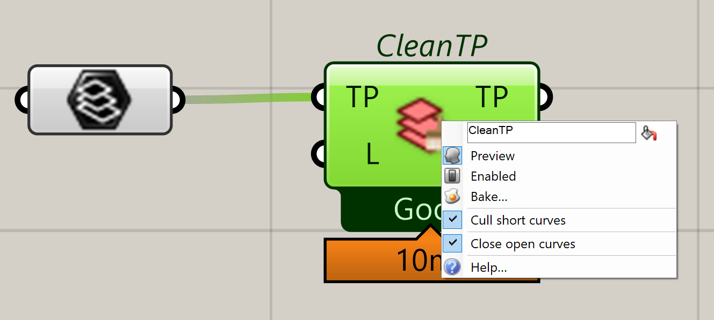
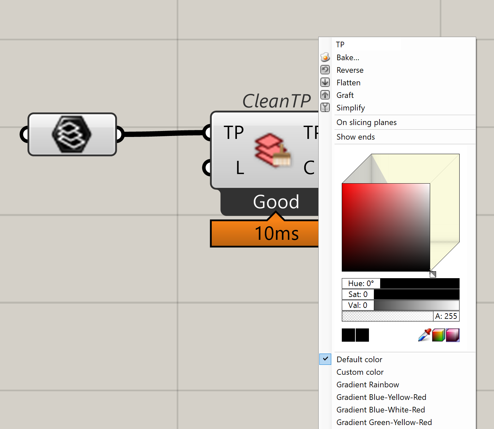
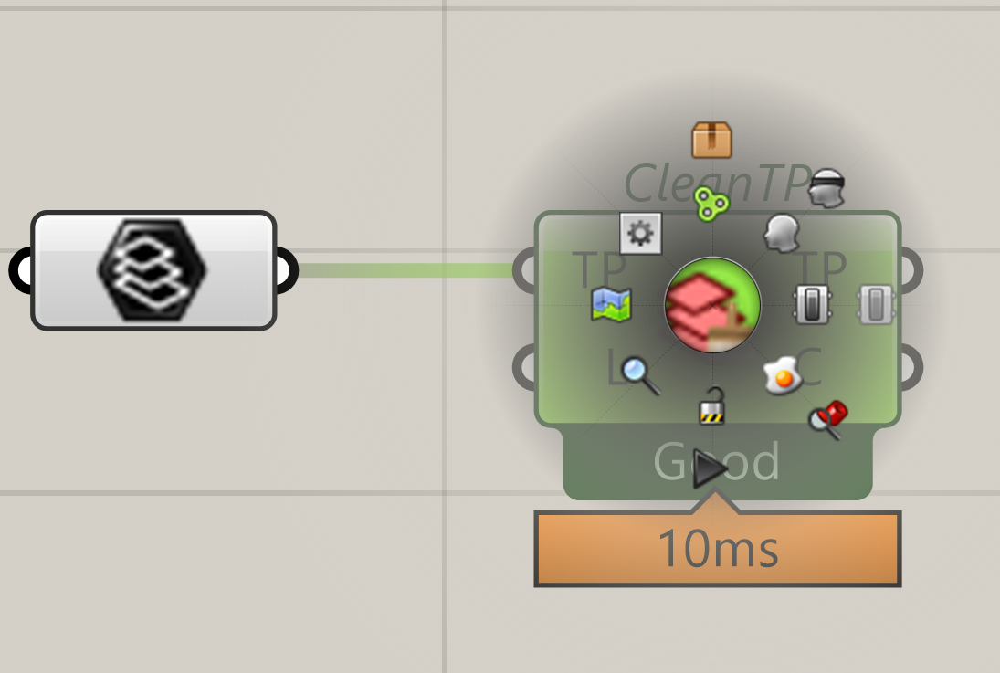
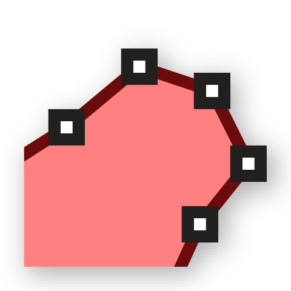
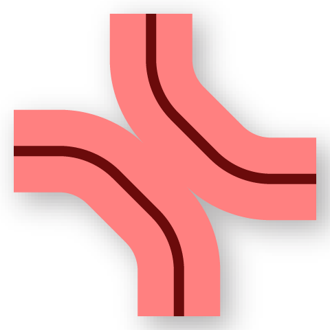
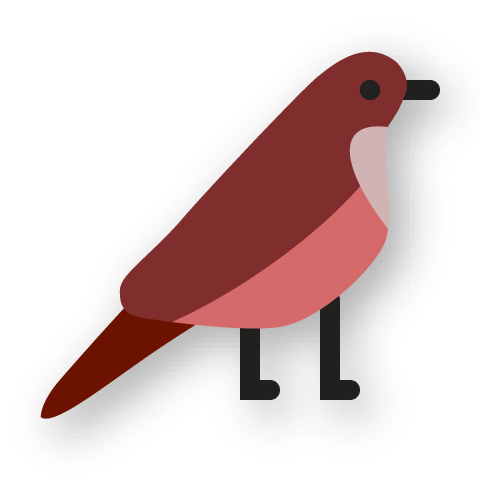

Tips¶
Ovenbird UI¶
The Ovenbird Grasshopper components are designed to be concise and convenient at the same time. Follow the four tips to make full use of the Ovenbird user interface.
Every component or parameter has a detailed description.

Almost all components with a message box have a right-click menu for extended options.

Any parameter can be customized for visualization through the right-click menu.

Parameters and a lot of components can be directly baked.
Tolerance and resolution¶
A lot of Ovenbird components make use of the absolute tolerance of your Rhino model, which is 0.001 units by default in Rhino 7. For different results and computation times, in Rhino, modify File → Properties... → Units → Absolute tolerance.
In

Polyline Toolpath, Smooth Toolpath, 
Overfill Optimization, Toolpath Mesh, and a lot of other components, there are resolution-like parameters that affect the results and compution times. Most of them come with default values, usually based on the average thickness of the Toolpath. Pay attention to such input parameters although they are optional to change. Some resolution factors are adjustable through the right-click menu.
Learn Ovenbird¶
There is no better way to learn Ovenbird other than playing with it. This site gives an overview of the design of Ovenbird but is just a first course. It is not meant to include full details of every component.
-
Take your time and explore all embedded examples in

Example Files. -
Go through all components of Ovenbird. Some are not included in
Example Filesbut are self-explanatory.
Grasshopper tips¶
-
Do not internalize heavy data in Grasshopper as it will slow down the editing of the Grasshopper file.
-
Lock the canvas Grasshopper when you need to make multiple changes before seeing the new result.
-
If a component has multiple inputs, connect the main data stream (e.g.,
ToolpathandContinuous Toolpathin Ovenbird) last to avoid unnecessary computing when the canvas is not locked. -
We recommend using another Grasshopper plug-in, Sunglasses, to display component names and preview DataTree structures.